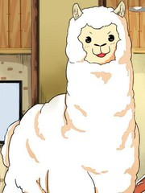

草泥馬的原產地為中國馬勒戈壁，外貌與其在南美洲的近親 - 羊駝頗為相似， 是其中最具代表性的一種草食性動物，以臥草為食，更是數量最龐大的一種動物， 故有生物學家認爲草泥馬應該正名為草泥馬戈壁種。 12 test
草泥馬的原產地為中國馬勒戈壁，外貌與其在南美洲的近親 - 羊駝頗為相似，
是其中最具代表性的一種草食性動物，以臥草為食，更是數量最龐大的一種動物，
故有生物學家認爲草泥馬應該正名為草泥馬戈壁種。 12
test
test 
[草泥馬 wiki]http://uncyclopedia.tw/wiki/%E8%8D%89%E6%B3%A5%E9%A6%AC